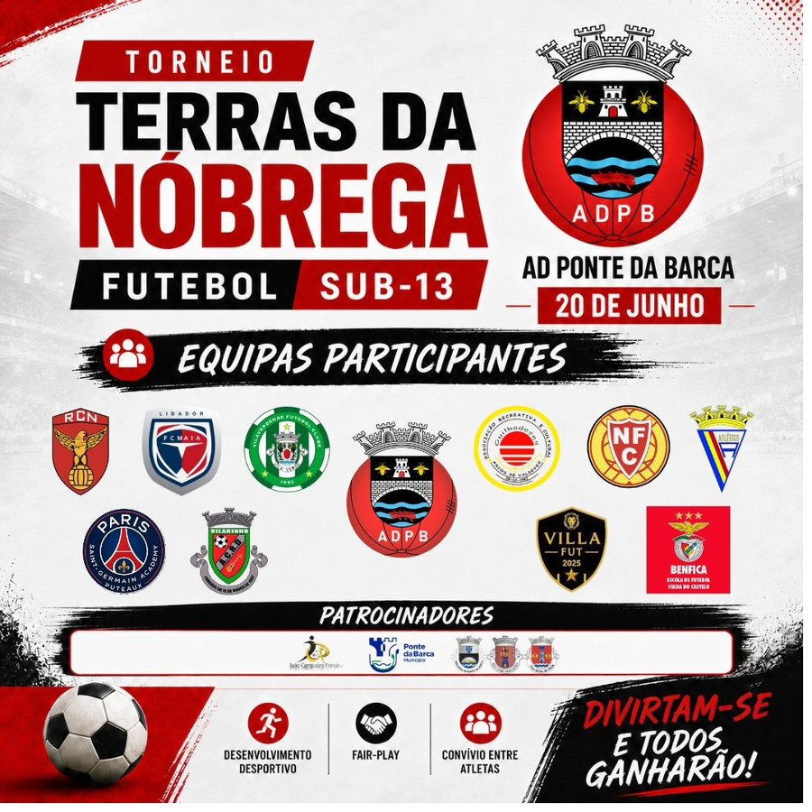
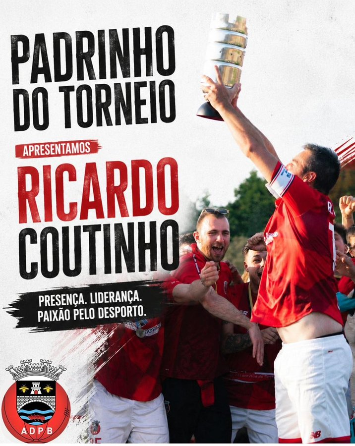

Edição 2026
12 equipas · 3 grupos · 20 de junho
Grupo A
- AD Ponte da Barca A
- ARC Guilhadeses
- ACDR Vilarinho
- FC Maia Lidador
Grupo B
- AD Ponte da Barca B
- Atlético dos Arcos
- Vilaverdense FC
- Neves FC
Grupo C
- Real Clube Nogueirense
- Paris Saint Germain Academy Puteaux
- Villa-Fut ACRD
- Escola Futebol Benfica - Viana do Castelo
Formato Competitivo
Fase de Grupos · 09h00 – 13h30
Cada equipa disputa 3 jogos dentro do seu grupo. Os 1ºs classificados de cada grupo e o melhor 2º apuram-se para as meias-finais.
Fase Final · 15h30 – 17h30
Meias-finais, jogos de classificação (5º ao 12º lugar), jogo de 3º/4º e a grande final às 17h00 no Campo 1.
Cartaz Oficial

Padrinho do Torneio
Temos a honra de contar com Ricardo Coutinho como padrinho da edição 2026 — presença, liderança e paixão pelo desporto. O padrinho participa, em conjunto com a Organização, na escolha do Prémio de Melhor Jogador do Torneio.
